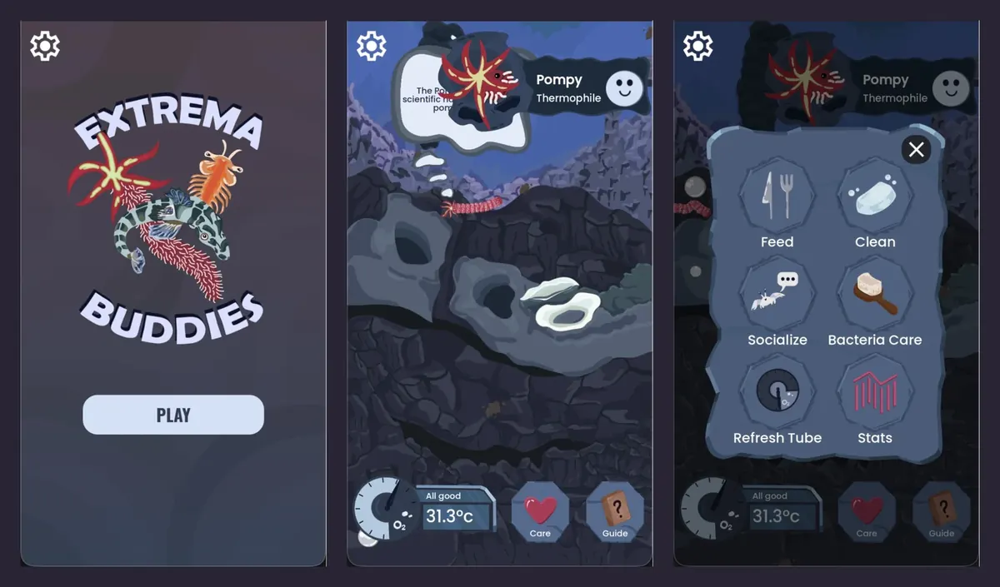

JR.2026.01 / Ontario Science Centre
Extrema Buddies
Godot 4.7, GDScript. January to October 2026.
A virtual pet game about extremophiles. You keep a Pompeii worm or a brine shrimp alive and learn how real organisms survive in extreme places.
| Role | Lead developer (850+ commits) |
|---|---|
| Skills | State machines, 2D physics, English and French localization |
| Outcome | 100+ automated tests; two playable species shipped as web builds |
© 2026 Ontario Science Centre. All rights reserved.